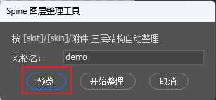
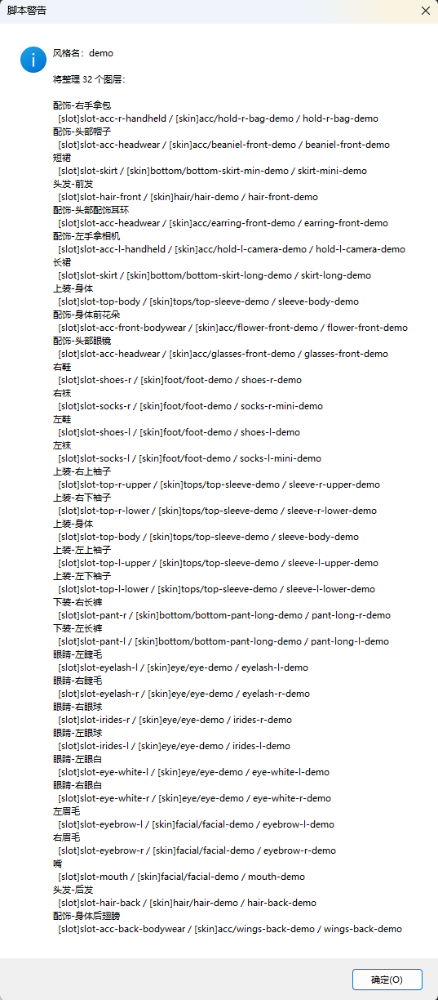
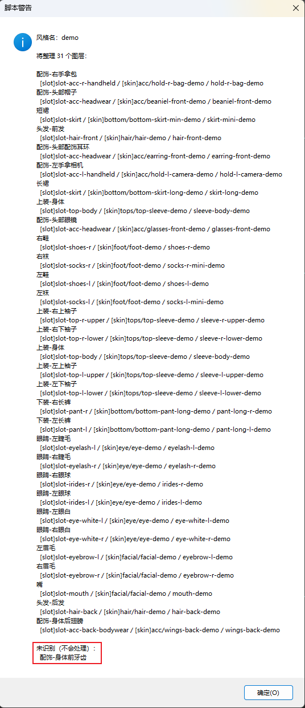
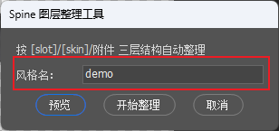
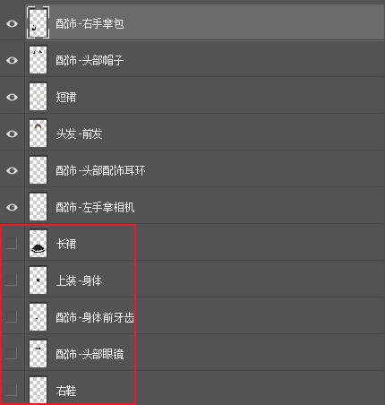

用中文命名 PS 图层，一键生成 Spine 标准三层结构
这个工具自动把 Photoshop 图层整理成 Spine 需要的三层嵌套结构。只要按规范用中文命名图层，点一下按钮就能生成规范结构，并自动做命名校验。
[slot]slot-xxx ← 插槽组
[skin]category/skin-{风格} ← 皮肤组
attachment-{风格} ← 实际图层（附件）PSD 文件名就是风格名，会自动提取并加到所有图层末尾。
| 文件名 | 提取出的风格名 |
|---|---|
school-blazer.psd | school-blazer ← 常规衣服 |
deer-onesie.psd | deer-onesie ← 连体衣（文件名含 onesie） |
在 Photoshop 菜单中选择：文件 → 脚本 → 浏览，找到并选择 spine_organizer.jsx。
弹出对话框后，风格名已自动填好。先点 「预览」 确认映射关系，再点 「开始整理」 执行。
脚本会自动完成：
基础部位必须完全按下表命名，同一行的多个写法任选其一即可。
| 中文命名（可选写法） | 生成结果 | 说明 |
|---|---|---|
头发-前发 / 前发 / 刘海 | hair-front-{风格} | 前面的头发 |
头发-后发 / 后发 | hair-back-{风格} | 后面的头发 |
| 中文命名（可选写法） | 生成结果 | 说明 |
|---|---|---|
鞋袜-左 / 左鞋 | shoes-l-{风格} | 左脚鞋 |
鞋袜-右 / 右鞋 | shoes-r-{风格} | 右脚鞋 |
左袜 | socks-l-mini-{风格} | 左脚短袜 |
右袜 | socks-r-mini-{风格} | 右脚短袜 |
鞋袜-左鞋角度1 | shoes-l-new-angle-{风格} | 左鞋角度变体（多角度版本） |
鞋袜-右鞋角度1 | shoes-r-new-angle-{风格} | 右鞋角度变体（多角度版本） |
slot-shoes-l 结构，右鞋角度使用 slot-shoes-r 结构。每个角度图层创建独立的同名 slot 组，方便管理同一鞋子的不同角度。| 中文命名（可选写法） | 生成结果 | 说明 |
|---|---|---|
上装-左上袖子 / 左上袖 | sleeve-l-upper-{风格} | 左上臂 |
上装-右上袖子 / 右上袖 | sleeve-r-upper-{风格} | 右上臂 |
上装-左下袖子 / 左下袖 | sleeve-l-lower-{风格} | 左下臂 |
上装-右下袖子 / 右下袖 | sleeve-r-lower-{风格} | 右下臂 |
上装-身体 / 身体 / 上衣 | sleeve-body-{风格} | 上衣主体 |
| 中文命名（可选写法） | 生成结果 | 说明 |
|---|---|---|
上装-左袖子 / 左袖 | sleeve-l-{风格} | 左袖 |
上装-右袖子 / 右袖 | sleeve-r-{风格} | 右袖 |
上装-身体 / 身体 / 上衣 | sleeve-body-{风格} | 上衣主体 |
sleeve-l-upper 简化成 sleeve-l，不需要你手动改。| 中文命名（可选写法） | 生成结果 | 说明 |
|---|---|---|
下装-左长裤 / 左长裤 | pant-long-l-{风格} | 左腿长裤 |
下装-右长裤 / 右长裤 | pant-long-r-{风格} | 右腿长裤 |
下装-左短裤 / 左短裤 / 左裤 | pant-mini-l-{风格} | 左腿短裤 |
下装-右短裤 / 右短裤 / 右裤 | pant-mini-r-{风格} | 右腿短裤 |
裙子 / 短裙 | skirt-mini-{风格} | 短裙 |
长裙 | skirt-long-{风格} | 长裙 |
| 中文命名（可选写法） | 生成结果 | 说明 |
|---|---|---|
左眉毛 / 左眉 | eyebrow-l-{风格} | 左眉 |
右眉毛 / 右眉 | eyebrow-r-{风格} | 右眉 |
嘴巴 / 嘴 | mouth-{风格} | 嘴巴 |
| 中文命名（可选写法） | 生成结果 | 说明 |
|---|---|---|
眼睛-左眼白 / 左眼白 | eye-white-l-{风格} | 左眼白 |
眼睛-右眼白 / 右眼白 | eye-white-r-{风格} | 右眼白 |
眼睛-左眼珠 / 左瞳 / 左眼球 | irides-l-{风格} | 左瞳孔 |
眼睛-右眼珠 / 右瞳 / 右眼球 | irides-r-{风格} | 右瞳孔 |
眼睛-左睫毛 / 左睫 | eyelash-l-{风格} | 左睫毛 |
眼睛-右睫毛 / 右睫 | eyelash-r-{风格} | 右睫毛 |
配饰的前缀格式固定，物品名会被自动识别并转成英文。格式：配饰-{位置}{物品}
配饰-头部，否则脚本无法识别。命名格式：配饰-左手拿{物品} / 配饰-右手拿{物品}
生成格式：hold-{l/r}-{物品英文}-{风格}
| 中文物品名 | 英文代码 | 命名示例 |
|---|---|---|
| 平底锅 | pan | 配饰-左手拿平底锅 |
| 荧光棒 | lightstick | 配饰-右手拿荧光棒 |
| 法杖 | wand | 配饰-左手拿法杖 |
| 包 | bag | 配饰-右手拿包 |
| 伞 | umbrella | 配饰-左手拿伞 |
| 剑 | sword | 配饰-右手拿剑 |
| 书 | book | 配饰-左手拿书 |
| 花 | flower | 配饰-右手拿花 |
| 灯笼 | lantern | 配饰-左手拿灯笼 |
| 手机 | phone | 配饰-右手拿手机 |
| 相机 | camera | 配饰-左手拿相机 |
| 杯子 | cup | 配饰-右手拿杯子 |
| 球 | ball | 配饰-左手拿球 |
| 旗 | flag | 配饰-右手拿旗 |
| 扇子 | fan | 配饰-左手拿扇子 |
| 喇叭 | trumpet | 配饰-右手拿喇叭 |
| 话筒 / 麦克风 | microphone | 配饰-左手拿话筒 |
示例：配饰-左手拿法杖 → hold-l-wand-deer
命名格式：配饰-身体前{物品} → 生成 {物品英文}-front-{风格}
| 中文物品名 | 英文代码 | 命名示例 |
|---|---|---|
| 项链 | necklace | 配饰-身体前项链 |
| 项圈 / 颈圈 / 脖圈 | choker | 配饰-身体前项圈 |
| 腰带 | belt | 配饰-身体前腰带 |
| 衬衫 | shirt | 配饰-身体前衬衫 |
| 领带 | tie | 配饰-身体前领带 |
| 领结 | bowtie | 配饰-身体前领结 |
| 围巾 | scarf | 配饰-身体前围巾 |
| 胸针 | brooch | 配饰-身体前胸针 |
| 徽章 | badge | 配饰-身体前徽章 |
| 花朵 / 花 | flower | 配饰-身体前花朵 |
示例：配饰-身体前项链 → necklace-front-deer
命名格式：配饰-身体后{物品} → 生成 {物品英文}-back-{风格}
| 中文物品名 | 英文代码 | 命名示例 |
|---|---|---|
| 背包 | backpack | 配饰-身体后背包 |
| 尾巴 | tail | 配饰-身体后尾巴 |
| 翅膀 / 翼 | wings | 配饰-身体后翅膀 |
| 披风 | cape | 配饰-身体后披风 |
| 斗篷 | cloak | 配饰-身体后斗篷 |
示例：配饰-身体后翅膀 → wings-back-deer
命名格式：配饰-头部{物品} → 生成 {物品英文}-front-{风格}
| 中文物品名 | 英文代码 | 命名示例 |
|---|---|---|
| 皇冠 | crown | 配饰-头部皇冠 |
| 发箍 / 发带 / 大眼发箍 | headband | 配饰-头部发箍 |
| 鹿角 | antler | 配饰-头部鹿角 |
| 发夹 | hairpin | 配饰-头部发夹 |
| 帽子 / 贝雷帽 | beaniel | 配饰-头部帽子 |
| 眼镜 | glasses | 配饰-头部眼镜 |
| 耳环 / 耳钉 | earring | 配饰-头部耳环 |
| 耳机 | headphone | 配饰-头部耳机 |
| 兔耳 | bunnyear | 配饰-头部兔耳 |
| 猫耳 | catear | 配饰-头部猫耳 |
| 光环 / 天使圈 | halo | 配饰-头部光环 |
示例：配饰-头部皇冠 → crown-front-princess
| 功能 | 说明 |
|---|---|
| 跳过隐藏图层 | 只处理可见图层。参考图、草稿层隐藏即可，不会被整理。 |
| 智能袖子检测 | 有上下袖 → 保留 -upper/-lower；只有上袖 → 自动简化为 sleeve-l。 |
| 连体衣检测 | 文件名含 onesie 时，上装和下装自动合并为同一个 skin：onesie/onesie-{类型}。有裙子则类型为 skirt，否则为 sleeve。 |
| 镜像件处理 | 图层名带 镜像 或 mirror → skin 名和图层名在风格名后加 -mirror，slot 名不变。用于同一部位的换肤变体（常见于上装、裤子的不同花色）。 |
| 角度变体处理 | 图层名带 角度 关键字（如 鞋袜-左鞋角度1）→ 自动识别为鞋子的多角度版本。左鞋角度使用 slot-shoes-l 结构，右鞋角度使用 slot-shoes-r 结构，图层名为 shoes-{l/r}-new-angle-{风格}。每个角度图层创建独立的 slot 组（同名但独立），方便在 Spine 中管理多个角度版本。 |
| 自动栅格化 | 智能对象、文字图层自动转为普通图层，视觉效果不变。 |
| 保持位置 | 不改画布尺寸，不改图层位置，只重组分组结构和命名。 |
| 命名验证 | 整理后自动检查同类部位是否共享 skin、风格后缀是否完整、命名格式是否正确、是否有空组。 |
文件 school-blazer.psd，图层命名 头发-前发 / 头发-后发：
[slot]slot-hair-front
[skin]hair/hair-school-blazer
hair-front-school-blazer
[slot]slot-hair-back
[skin]hair/hair-school-blazer
hair-back-school-blazer文件 deer.psd，图层命名 配饰-左手拿法杖 / 配饰-右手拿包：
[slot]slot-acc-l-handheld
[skin]acc/hold-l-wand-deer
hold-l-wand-deer
[slot]slot-acc-r-handheld
[skin]acc/hold-r-bag-deer
hold-r-bag-deer文件 princess.psd，图层命名 配饰-头部皇冠：
[slot]slot-acc-headwear
[skin]acc/crown-front-princess
crown-front-princess文件 deer.psd，眼睛全套图层：
[slot]slot-eye-white-l
[skin]eye/eye-deer
eye-white-l-deer
[slot]slot-eye-white-r
[skin]eye/eye-deer
eye-white-r-deer
[slot]slot-irides-l
[skin]eye/eye-deer
irides-l-deer
[slot]slot-irides-r
[skin]eye/eye-deer
irides-r-deer
[slot]slot-eyelash-l
[skin]eye/eye-deer
eyelash-l-deer
[slot]slot-eyelash-r
[skin]eye/eye-deer
eyelash-r-deereye/eye-deer 这一个 skin，这样在 Spine 里换肤时���整套一起切换。文件 demo.psd，图层命名 上装-身体 / 上装-身体镜像：
[slot]slot-top-body
[skin]tops/top-sleeve-demo
sleeve-body-demo
[slot]slot-top-body
[skin]tops/top-sleeve-demo-mirror
sleeve-body-demo-mirror-mirror）。在 PSD 里是分开的文件夹，导出到 Spine 后会合并成一个 slot，切换 skin 就能换花色，绑定和动画不需要重做。文件 demo.psd，图层命名 鞋袜-左鞋角度1 / 鞋袜-右鞋角度1：
[slot]slot-shoes-l
[skin]foot/foot-demo
shoes-l-new-angle-demo
[slot]slot-shoes-r
[skin]foot/foot-demo
shoes-r-new-angle-demoslot-shoes-l 结构，右鞋角度使用 slot-shoes-r 结构。每个角度图层都是独立的组，图层名带 -new-angle 标识。导出到 Spine 后，同名 slot 会自动合并，方便管理同一个鞋子的多个角度版本。整理 deer.psd，图层面板命名如下：
头发-前发
头发-后发
左鞋
右鞋
上装-左袖
上装-右袖
上装-身体
裙子
配饰-头部鹿角
配饰-左手拿法杖
眼睛-左眼白
眼睛-右眼白
眼睛-左眼珠
眼睛-右眼珠
嘴运行脚本后弹出：
整理完成！成功 15 / 15
========== 验证命名正确性 ==========
✅ 所有检查通过！命名结构正确。| 项目 | 要点 |
|---|---|
| 文件命名 | PSD 文件名即风格名，用英文小写 + 连字符。不要用中文文件名。 |
| 图层命名 | 必须严格按规范表命名，可用简写。不能自创命名，脚本识别不了。 |
| 配饰命名 | 必须写明具体物品，例如 配饰-头部皇冠，不能只写 配饰-头部。 |
| 图层可见性 | 只处理可见图层。不想整理的图层，隐藏它就行。 |
| 画布位置 | 脚本不改画布尺寸，也不移动图层位置。 |
| 未识别图层 | 命名不符规范的图层会在结果对话框里列出，保持原样不动。 |
| 备份 | 脚本会直接修改当前 PSD。运行前建议先另存一份备份。 |
遇到词典里没有的新物品，可以自己加进脚本：
spine_organizer.jsxHANDHELD_ITEMS（手持）、FRONT_BODYWEAR（身体前）、BACK_BODYWEAR（身体后）、HEADWEAR（头部）// 例：给手持物品词典加「魔杖」
var HANDHELD_ITEMS = {
"魔杖": "magicwand", // 英文代码只能是一个单词，不要带空格或连字符
"平底锅": "pan",
"荧光棒": "lightstick",
// ... 其余保持不变
};出现「未识别」说��这个图层的命名有问题，脚本不知道该把它放进哪个插槽，会直接跳过不处理。需要回去改图层名，改完重新运行。
运行脚本后先点「预览」，预览只显示结果、不改动文件。

然后对比一下预览结果（点图片可放大查看）：


风格名是从 PSD 文件名自动提取的，如果不对，直接在对话框的输入框里改掉再点「开始整理」——不用去改文件名重开。

不能直接改。整理后的结构不要手动调整，必须先用 Ctrl+Z 撤销回中文命名的状态，改好图层名后重新运行脚本。
把不需要整理的图层隐藏起来，脚本只处理可见图层。

错误（❌）必须修，比如同类部位 skin 名不一致、缺风格后缀——这些会导致 Spine 换肤出问题。警告（⚠️）可以忽略，比如只有左边没右边，不对称设计是正常的。
运行脚本前，照这个清单过一遍：
头发-前发、头发-后发左鞋、右鞋、左袜、右袜左袖、右袖、身体（或分上下臂的版本）裙子 或 左裤、右裤左眉毛、右眉毛、嘴巴左眼白、右眼白、左眼珠、右眼珠、左睫毛、右睫毛配饰-左手拿{物品}、配饰-右手拿{物品}配饰-身体前{物品}配饰-身体后{物品}配饰-头部{物品}